Proyecto Integrador de Aprendizaje Automático#
El crecimiento de las plataformas de préstamos en línea ha generado grandes volúmenes de datos financieros y socioeconómicos que representan una oportunidad para aplicar técnicas de aprendizaje automático en la predicción del riesgo crediticio. Con la plataforma de Lending Club nos proporciona un extenso conjunto de información histórica sobre los préstamos emitidos entre 2007 y 2020, al igual que variables relacionadas con el perfil del que solicita, condiciones del crédito y su estado.
El presente proyecto tiene como objetivo construir un modelo de clasificación supervisada capaz de predecir si un préstamo será pagado en su totalidad o entrará en incumplimiento. Por eso, se comparan dos enfoques: scikit-learn y con PySpark. Evaluando el rendimiento de ambos como métricas de clasificación y tiempos de ejecusión, junto con la técnica LIME para interpretar los resultados.
# ==============================
# 0. IMPORTS & GLOBAL STYLE
# ==============================
import os
import gc
import time
import json
import math
import random
import warnings
warnings.filterwarnings("ignore")
# NumPy / Pandas
import numpy as np
import pandas as pd
# Visualización
import matplotlib.pyplot as plt
import seaborn as sns
plt.style.use("seaborn-v0_8")
sns.set_theme(style="whitegrid")
plt.rcParams.update({
"figure.figsize": (12, 6),
"font.size": 12,
"axes.spines.top": False,
"axes.spines.right": False,
})
# Scikit-learn (solo importaciones base; el resto se hará en secciones)
from sklearn.model_selection import train_test_split
PROJECT_NAME = "LendingClub_Default_Clasificacion"
RESULTS_DIR = "resultados"
FIGS_DIR = os.path.join(RESULTS_DIR, "figs")
ARTIFACTS_DIR= os.path.join(RESULTS_DIR, "artifacts")
for d in [RESULTS_DIR, FIGS_DIR, ARTIFACTS_DIR]:
os.makedirs(d, exist_ok=True)
# Ruta del dataset (ajústala si usas otro CSV o carpeta)
CSV_FILE = "accepted_2007_to_2018Q4.csv" # (Kaggle Lending Club 2007-2018Q4). Cambia si usas 2007-2020.
# Semillas para reproducibilidad
RANDOM_SEED = 42
np.random.seed(RANDOM_SEED)
random.seed(RANDOM_SEED)
# Submuestreo SOLO para gráficas EDA pesadas (no afecta modelado)
EDA_SAMPLE_MAX = 200_000 # reduce si tu máquina es limitada
# Variables clave pedidas en los lineamientos (orientarán EDA/preproc/modelado)
CORE_FEATURES = [
# Monto y términos del préstamo
"loan_amnt", "term", "int_rate", "installment",
# Calificación/FICO
"grade", "sub_grade", "fico_range_low", "fico_range_high",
# Empleo / ingresos
"emp_length", "emp_length_num", # emp_length_num la generaremos si falta
"annual_inc", "verification_status",
# Hogar / propósito / estado
"home_ownership", "purpose", "addr_state",
# Deuda e historial
"dti", "delinq_2yrs", "inq_last_6mths", "open_acc", "pub_rec",
"revol_bal", "revol_util", "total_acc",
# Estado de lista / tipo de aplicación
"initial_list_status", "application_type",
# Target
"loan_status" # lo convertiremos a 'default' (0/1)
]
from contextlib import contextmanager
@contextmanager
def timer(msg: str):
"""Context manager simple para medir tiempos."""
t0 = time.time()
print(f"[⏱️] {msg} ...", end="", flush=True)
try:
yield
finally:
t1 = time.time()
print(f" hecho en {t1 - t0:.2f}s")
def memory_usage_mb(df: pd.DataFrame) -> float:
"""Memoria aproximada en MB para un DataFrame pandas."""
return float(df.memory_usage(deep=True).sum()) / (1024 ** 2)
def parse_emp_length(x):
"""
Convierte 'emp_length' textual a años (int), siguiendo reglas comunes de Lending Club:
- '10+ years' -> 10
- '< 1 year' -> 0
- 'n/a' -> NaN
- '7 years' -> 7
"""
if pd.isna(x):
return np.nan
s = str(x).lower()
if "10+" in s: return 10
if "< 1" in s: return 0
if "n/a" in s: return np.nan
import re
m = re.search(r"(\d+)", s)
return int(m.group(1)) if m else np.nan
def save_fig(path: str, dpi: int = 120, tight: bool = True):
"""Guardar la figura actual con parámetros consistentes."""
if tight:
plt.tight_layout()
plt.savefig(path, dpi=dpi)
print(f"[💾] Figura guardada en: {path}")
def save_json(obj, path: str):
with open(path, "w", encoding="utf-8") as f:
json.dump(obj, f, indent=2, ensure_ascii=False)
print(f"[💾] JSON guardado en: {path}")
# ==========================================
# 0.3 CHEQUEO DE VERSIONES
# ==========================================
import sys
from importlib.metadata import version, PackageNotFoundError
print("Python:", sys.version)
versions = {
"python": sys.version.split()[0],
"numpy": np.__version__,
"pandas": pd.__version__,
"matplotlib": plt.matplotlib.__version__,
"seaborn": sns.__version__,
}
# scikit-learn
try:
import sklearn
versions["scikit_learn"] = sklearn.__version__
except Exception:
versions["scikit_learn"] = "N/A"
# pyspark
try:
import pyspark
versions["pyspark"] = pyspark.__version__
except Exception:
versions["pyspark"] = "N/A"
# lime (usa importlib.metadata)
try:
versions["lime"] = version("lime")
except PackageNotFoundError:
versions["lime"] = "N/A"
print("== Versiones ==")
for k, v in versions.items():
print(f"{k:>12}: {v}")
save_json(versions, os.path.join(ARTIFACTS_DIR, "versions.json"))
Python: 3.9.23 (main, Jun 5 2025, 13:25:08) [MSC v.1929 64 bit (AMD64)]
== Versiones ==
python: 3.9.23
numpy: 1.25.2
pandas: 2.3.1
matplotlib: 3.7.2
seaborn: 0.12.2
scikit_learn: 1.3.0
pyspark: N/A
lime: N/A
[💾] JSON guardado en: resultados\artifacts\versions.json
import os, json, random, warnings, sys
import numpy as np
import pandas as pd
warnings.filterwarnings("ignore")
# --- Semillas para reproducibilidad (pandas/numpy/ramdom; sklearn y pyspark las fijamos más adelante)
GLOBAL_SEED = 42
random.seed(GLOBAL_SEED)
np.random.seed(GLOBAL_SEED)
# --- Rutas
DATA_DIR = "."
CSV_FILE = os.path.join(DATA_DIR, "accepted_2007_to_2018Q4.csv") # ajusta si tu CSV es otro
ARTIFACTS_DIR = "resultados"
os.makedirs(ARTIFACTS_DIR, exist_ok=True)
# --- Utilidades simples
def save_json(obj, path):
with open(path, "w", encoding="utf-8") as f:
json.dump(obj, f, ensure_ascii=False, indent=2)
def mem_mb(df):
return f"{df.memory_usage(deep=True).sum()/1024/1024:,.1f} MB"
print("Python:", sys.version)
print("Seed global:", GLOBAL_SEED)
print("CSV_FILE:", CSV_FILE)
print("ARTIFACTS_DIR:", ARTIFACTS_DIR)
Python: 3.9.23 (main, Jun 5 2025, 13:25:08) [MSC v.1929 64 bit (AMD64)]
Seed global: 42
CSV_FILE: .\accepted_2007_to_2018Q4.csv
ARTIFACTS_DIR: resultados
# ===================================
# 1.1 CARGA DEL CSV (lectura segura)
# ===================================
# Notas:
# - low_memory=False para parseo estable.
# - No imponemos dtypes aún porque el CSV de Lending Club trae columnas inconsistentes según años.
# - Convertiremos tipos clave luego para ahorrar memoria/control.
assert os.path.exists(CSV_FILE), f"No se encontró el archivo: {CSV_FILE}"
print("Cargando CSV (puede tardar un poco)...")
df = pd.read_csv(CSV_FILE, low_memory=False)
print("Shape original:", df.shape)
print("Memoria (aprox):", mem_mb(df))
# Guardamos columnas originales por referencia
cols_originales = df.columns.tolist()
save_json({"columns": cols_originales}, os.path.join(ARTIFACTS_DIR, "columns_raw.json"))
# Vista rápida
display(df.head(3))
---------------------------------------------------------------------------
AssertionError Traceback (most recent call last)
Cell In[6], line 9
1 # ===================================
2 # 1.1 CARGA DEL CSV (lectura segura)
3 # ===================================
(...)
6 # - No imponemos dtypes aún porque el CSV de Lending Club trae columnas inconsistentes según años.
7 # - Convertiremos tipos clave luego para ahorrar memoria/control.
----> 9 assert os.path.exists(CSV_FILE), f"No se encontró el archivo: {CSV_FILE}"
11 print("Cargando CSV (puede tardar un poco)...")
12 df = pd.read_csv(CSV_FILE, low_memory=False)
AssertionError: No se encontró el archivo: .\accepted_2007_to_2018Q4.csv
valid_status = {"Fully Paid", "Charged Off"}
if "loan_status" not in df.columns:
raise RuntimeError("No existe la columna 'loan_status' en el dataset.")
df = df[df["loan_status"].isin(valid_status)].copy()
# Target binario: 1 = Charged Off (default), 0 = Fully Paid
df["default"] = (df["loan_status"] == "Charged Off").astype(int)
print("Shape tras filtrar:", df.shape)
dist = df["default"].value_counts(normalize=True).rename({0:"Fully Paid (0)", 1:"Charged Off (1)"})
print("Distribución 'default' (%):")
display((dist * 100).round(2))
# Muestra rápida para sanity
display(df[["loan_status", "default"]].head(5))
Shape tras filtrar: (1345310, 152)
Distribución 'default' (%):
default
Fully Paid (0) 80.04
Charged Off (1) 19.96
Name: proportion, dtype: float64
| loan_status | default | |
|---|---|---|
| 0 | Fully Paid | 0 |
| 1 | Fully Paid | 0 |
| 2 | Fully Paid | 0 |
| 4 | Fully Paid | 0 |
| 5 | Fully Paid | 0 |
# ==================================================================
# 1.3 NORMALIZACIONES BÁSICAS (solo parsing/limpieza)
# ==================================================================
# Nota: estas transformaciones NO usan información de train/test, solo estandarizan el crudo.
# 1) int_rate y revol_util suelen venir como '12.34%' -> a float
for pct_col in ["int_rate", "revol_util"]:
if pct_col in df.columns:
df[pct_col] = (
df[pct_col]
.astype(str)
.str.replace("%", "", regex=False)
.replace({"": np.nan, "nan": np.nan})
.astype(float)
)
# 2) term: '36 months'/'60 months' -> 36/60 (int)
if "term" in df.columns:
df["term"] = (
df["term"].astype(str).str.extract(r"(\d+)")[0]
.astype(float) # pasa por float para tolerar NaN
.astype("Int64") # entero nullable
)
# 3) emp_length_num (años) a partir de emp_length textual si no existe
if "emp_length_num" not in df.columns and "emp_length" in df.columns:
def parse_emp_length(x):
if pd.isna(x):
return np.nan
s = str(x).lower()
if "10+" in s: return 10
if "< 1" in s: return 0
if "n/a" in s: return np.nan
import re
m = re.search(r"(\d+)", s)
return int(m.group(1)) if m else np.nan
df["emp_length_num"] = df["emp_length"].apply(parse_emp_length)
# 4) Coerciones numéricas suaves (solo si existen)
to_float_cols = [
"loan_amnt","installment","fico_range_low","fico_range_high","annual_inc",
"dti","delinq_2yrs","inq_last_6mths","open_acc","pub_rec","revol_bal",
"total_acc"
]
for c in to_float_cols:
if c in df.columns:
df[c] = pd.to_numeric(df[c], errors="coerce")
print("Tipos tras normalizaciones básicas:")
display(df.dtypes.head(30))
print("Memoria (aprox) post-norm:", mem_mb(df))
Tipos tras normalizaciones básicas:
id object
member_id float64
loan_amnt float64
funded_amnt float64
funded_amnt_inv float64
term Int64
int_rate float64
installment float64
grade object
sub_grade object
emp_title object
emp_length object
home_ownership object
annual_inc float64
verification_status object
issue_d object
loan_status object
pymnt_plan object
url object
desc object
purpose object
title object
zip_code object
addr_state object
dti float64
delinq_2yrs float64
earliest_cr_line object
fico_range_low float64
fico_range_high float64
inq_last_6mths float64
dtype: object
Memoria (aprox) post-norm: 3,762.6 MB
# ===========================================================
# 1.4 SUBCONJUNTO DE INTERÉS
# ===========================================================
candidate_features = [
# Monto y términos del préstamo
"loan_amnt", "term", "int_rate", "installment",
# Calificación crediticia y FICO al orig.
"grade", "sub_grade", "fico_range_low", "fico_range_high",
# Empleo e ingresos
"emp_length", "emp_length_num",
"annual_inc", "verification_status",
# Hogar y propósito
"home_ownership", "purpose", "addr_state",
# Deuda, historial y cuentas
"dti", "delinq_2yrs", "inq_last_6mths", "open_acc", "pub_rec",
"revol_bal", "revol_util", "total_acc",
# Estado inicial de la lista y tipo de aplicación
"initial_list_status", "application_type",
# Target
"default"
]
cols_present = [c for c in candidate_features if c in df.columns]
missing_cols = sorted(set(candidate_features) - set(cols_present))
if missing_cols:
print("Advertencia: no se encontraron algunas columnas esperadas:", missing_cols)
df = df[cols_present].copy()
print("Columnas seleccionadas:", len(df.columns))
display(df.head(3))
print("Memoria (aprox) subset:", mem_mb(df))
Columnas seleccionadas: 26
| loan_amnt | term | int_rate | installment | grade | sub_grade | fico_range_low | fico_range_high | emp_length | emp_length_num | ... | delinq_2yrs | inq_last_6mths | open_acc | pub_rec | revol_bal | revol_util | total_acc | initial_list_status | application_type | default | |
|---|---|---|---|---|---|---|---|---|---|---|---|---|---|---|---|---|---|---|---|---|---|
| 0 | 3600.0 | 36 | 13.99 | 123.03 | C | C4 | 675.0 | 679.0 | 10+ years | 10.0 | ... | 0.0 | 1.0 | 7.0 | 0.0 | 2765.0 | 29.7 | 13.0 | w | Individual | 0 |
| 1 | 24700.0 | 36 | 11.99 | 820.28 | C | C1 | 715.0 | 719.0 | 10+ years | 10.0 | ... | 1.0 | 4.0 | 22.0 | 0.0 | 21470.0 | 19.2 | 38.0 | w | Individual | 0 |
| 2 | 20000.0 | 60 | 10.78 | 432.66 | B | B4 | 695.0 | 699.0 | 10+ years | 10.0 | ... | 0.0 | 0.0 | 6.0 | 0.0 | 7869.0 | 56.2 | 18.0 | w | Joint App | 0 |
3 rows × 26 columns
Memoria (aprox) subset: 909.0 MB
# ==================================================
# 1.5 GUARDADO (opcional) DE VERSIÓN FILTRADA
# ==================================================
# Guardamos a Parquet si está disponible (más rápido/compacto que CSV).
# Si prefieres CSV (más interoperable), descomenta la línea correspondiente.
PARQUET_PATH = os.path.join(ARTIFACTS_DIR, "lendingclub_filtered.parquet")
CSV_FILTERED = os.path.join(ARTIFACTS_DIR, "lendingclub_filtered.csv")
try:
df.to_parquet(PARQUET_PATH, index=False)
print("Guardado (parquet):", PARQUET_PATH)
except Exception as e:
print("No se pudo guardar como parquet:", e)
# Guardamos también como CSV ligero (útil para revisar fuera de Python)
try:
df.head(500_000).to_csv(CSV_FILTERED, index=False) # head para no generar un CSV gigante accidentalmente
print("Guardado (CSV muestra):", CSV_FILTERED)
except Exception as e:
print("No se pudo guardar CSV filtrado:", e)
No se pudo guardar como parquet: Unable to find a usable engine; tried using: 'pyarrow', 'fastparquet'.
A suitable version of pyarrow or fastparquet is required for parquet support.
Trying to import the above resulted in these errors:
- Missing optional dependency 'pyarrow'. pyarrow is required for parquet support. Use pip or conda to install pyarrow.
- Missing optional dependency 'fastparquet'. fastparquet is required for parquet support. Use pip or conda to install fastparquet.
Guardado (CSV muestra): resultados\lendingclub_filtered.csv
# ================================
# 2.0 RESUMEN GENERAL DEL DATASET
# ================================
print("Shape actual:", df.shape)
print("Memoria (aprox):", mem_mb(df))
print("\n--- Primeras filas ---")
display(df.head(5))
print("\n--- Info rápida ---")
print(df.info())
print("\n--- Resumen estadístico (numéricas) ---")
display(df.describe().T)
print("\n--- Resumen estadístico (categóricas) ---")
cat_cols = [c for c in df.columns if df[c].dtype == "object" and c != "loan_status"]
for c in cat_cols[:10]:
print(f"\nColumna: {c}")
print(df[c].value_counts(dropna=False).head(10))
Shape actual: (1345310, 26)
Memoria (aprox): 909.0 MB
--- Primeras filas ---
| loan_amnt | term | int_rate | installment | grade | sub_grade | fico_range_low | fico_range_high | emp_length | emp_length_num | ... | delinq_2yrs | inq_last_6mths | open_acc | pub_rec | revol_bal | revol_util | total_acc | initial_list_status | application_type | default | |
|---|---|---|---|---|---|---|---|---|---|---|---|---|---|---|---|---|---|---|---|---|---|
| 0 | 3600.0 | 36 | 13.99 | 123.03 | C | C4 | 675.0 | 679.0 | 10+ years | 10.0 | ... | 0.0 | 1.0 | 7.0 | 0.0 | 2765.0 | 29.7 | 13.0 | w | Individual | 0 |
| 1 | 24700.0 | 36 | 11.99 | 820.28 | C | C1 | 715.0 | 719.0 | 10+ years | 10.0 | ... | 1.0 | 4.0 | 22.0 | 0.0 | 21470.0 | 19.2 | 38.0 | w | Individual | 0 |
| 2 | 20000.0 | 60 | 10.78 | 432.66 | B | B4 | 695.0 | 699.0 | 10+ years | 10.0 | ... | 0.0 | 0.0 | 6.0 | 0.0 | 7869.0 | 56.2 | 18.0 | w | Joint App | 0 |
| 4 | 10400.0 | 60 | 22.45 | 289.91 | F | F1 | 695.0 | 699.0 | 3 years | 3.0 | ... | 1.0 | 3.0 | 12.0 | 0.0 | 21929.0 | 64.5 | 35.0 | w | Individual | 0 |
| 5 | 11950.0 | 36 | 13.44 | 405.18 | C | C3 | 690.0 | 694.0 | 4 years | 4.0 | ... | 0.0 | 0.0 | 5.0 | 0.0 | 8822.0 | 68.4 | 6.0 | w | Individual | 0 |
5 rows × 26 columns
--- Info rápida ---
<class 'pandas.core.frame.DataFrame'>
Index: 1345310 entries, 0 to 2260697
Data columns (total 26 columns):
# Column Non-Null Count Dtype
--- ------ -------------- -----
0 loan_amnt 1345310 non-null float64
1 term 1345310 non-null Int64
2 int_rate 1345310 non-null float64
3 installment 1345310 non-null float64
4 grade 1345310 non-null object
5 sub_grade 1345310 non-null object
6 fico_range_low 1345310 non-null float64
7 fico_range_high 1345310 non-null float64
8 emp_length 1266799 non-null object
9 emp_length_num 1266799 non-null float64
10 annual_inc 1345310 non-null float64
11 verification_status 1345310 non-null object
12 home_ownership 1345310 non-null object
13 purpose 1345310 non-null object
14 addr_state 1345310 non-null object
15 dti 1344936 non-null float64
16 delinq_2yrs 1345310 non-null float64
17 inq_last_6mths 1345309 non-null float64
18 open_acc 1345310 non-null float64
19 pub_rec 1345310 non-null float64
20 revol_bal 1345310 non-null float64
21 revol_util 1344453 non-null float64
22 total_acc 1345310 non-null float64
23 initial_list_status 1345310 non-null object
24 application_type 1345310 non-null object
25 default 1345310 non-null int32
dtypes: Int64(1), float64(15), int32(1), object(9)
memory usage: 273.3+ MB
None
--- Resumen estadístico (numéricas) ---
| count | mean | std | min | 25% | 50% | 75% | max | |
|---|---|---|---|---|---|---|---|---|
| loan_amnt | 1345310.0 | 14419.972014 | 8717.050787 | 500.0 | 8000.0 | 12000.0 | 20000.0 | 40000.0 |
| term | 1345310.0 | 41.790196 | 10.268321 | 36.0 | 36.0 | 36.0 | 36.0 | 60.0 |
| int_rate | 1345310.0 | 13.239619 | 4.768716 | 5.31 | 9.75 | 12.74 | 15.99 | 30.99 |
| installment | 1345310.0 | 438.075533 | 261.512604 | 4.93 | 248.48 | 375.43 | 580.73 | 1719.83 |
| fico_range_low | 1345310.0 | 696.185039 | 31.852512 | 625.0 | 670.0 | 690.0 | 710.0 | 845.0 |
| fico_range_high | 1345310.0 | 700.185177 | 31.853161 | 629.0 | 674.0 | 694.0 | 714.0 | 850.0 |
| emp_length_num | 1266799.0 | 5.965873 | 3.691166 | 0.0 | 2.0 | 6.0 | 10.0 | 10.0 |
| annual_inc | 1345310.0 | 76247.636414 | 69925.098427 | 0.0 | 45780.0 | 65000.0 | 90000.0 | 10999200.0 |
| dti | 1344936.0 | 18.282667 | 11.160446 | -1.0 | 11.79 | 17.61 | 24.06 | 999.0 |
| delinq_2yrs | 1345310.0 | 0.317794 | 0.877992 | 0.0 | 0.0 | 0.0 | 0.0 | 39.0 |
| inq_last_6mths | 1345309.0 | 0.655081 | 0.937774 | 0.0 | 0.0 | 0.0 | 1.0 | 8.0 |
| open_acc | 1345310.0 | 11.59352 | 5.473789 | 0.0 | 8.0 | 11.0 | 14.0 | 90.0 |
| pub_rec | 1345310.0 | 0.215276 | 0.601865 | 0.0 | 0.0 | 0.0 | 0.0 | 86.0 |
| revol_bal | 1345310.0 | 16248.11486 | 22328.168731 | 0.0 | 5943.0 | 11134.0 | 19755.75 | 2904836.0 |
| revol_util | 1344453.0 | 51.810022 | 24.521072 | 0.0 | 33.4 | 52.2 | 70.7 | 892.3 |
| total_acc | 1345310.0 | 24.980839 | 11.998474 | 2.0 | 16.0 | 23.0 | 32.0 | 176.0 |
| default | 1345310.0 | 0.199626 | 0.399719 | 0.0 | 0.0 | 0.0 | 0.0 | 1.0 |
--- Resumen estadístico (categóricas) ---
Columna: grade
grade
B 392741
C 381686
A 235090
D 200953
E 93650
F 32058
G 9132
Name: count, dtype: int64
Columna: sub_grade
sub_grade
C1 85494
B4 83199
B5 82538
B3 81827
C2 79213
C3 74998
C4 74421
B2 74024
B1 71153
C5 67560
Name: count, dtype: int64
Columna: emp_length
emp_length
10+ years 442199
2 years 121743
< 1 year 108061
3 years 107597
1 year 88494
5 years 84154
4 years 80556
NaN 78511
6 years 62733
8 years 60701
Name: count, dtype: int64
Columna: verification_status
verification_status
Source Verified 521273
Verified 418336
Not Verified 405701
Name: count, dtype: int64
Columna: home_ownership
home_ownership
MORTGAGE 665579
RENT 534421
OWN 144832
ANY 286
OTHER 144
NONE 48
Name: count, dtype: int64
Columna: purpose
purpose
debt_consolidation 780321
credit_card 295279
home_improvement 87504
other 77875
major_purchase 29425
medical 15554
small_business 15416
car 14585
moving 9480
vacation 9065
Name: count, dtype: int64
Columna: addr_state
addr_state
CA 196528
TX 110169
NY 109842
FL 95606
IL 51720
NJ 48449
PA 45522
OH 43842
GA 43376
VA 38040
Name: count, dtype: int64
Columna: initial_list_status
initial_list_status
w 784010
f 561300
Name: count, dtype: int64
Columna: application_type
application_type
Individual 1319510
Joint App 25800
Name: count, dtype: int64
# ================================
# 2.1 DISTRIBUCIÓN DEL TARGET
# ================================
import matplotlib.pyplot as plt
counts = df["default"].value_counts().sort_index()
plt.figure(figsize=(6,6))
plt.pie(counts, labels=["No Default (0)", "Default (1)"], autopct="%1.1f%%", startangle=90)
plt.title("Distribución de la variable 'default'")
plt.tight_layout()
plt.show()
print("Distribución absoluta de default:\n", df["default"].value_counts())
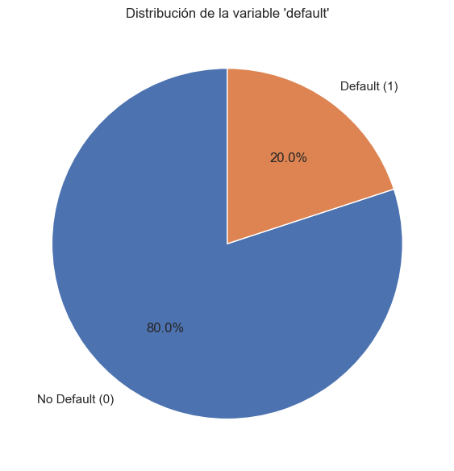
Distribución absoluta de default:
default
0 1076751
1 268559
Name: count, dtype: int64
# =======================================
# 2.2 VALORES FALTANTES Y CARDINALIDAD
# =======================================
na_tbl = (
df.isna().mean()
.sort_values(ascending=False)
.to_frame("missing_rate")
.assign(missing_pct=lambda x: (x["missing_rate"]*100).round(2))
)
print("\n--- Porcentaje de NA (top 20) ---")
display(na_tbl.head(20))
print("\n--- Cardinalidad (número de valores únicos) ---")
cardinality = df.nunique(dropna=False).sort_values(ascending=False)
display(cardinality.head(20))
--- Porcentaje de NA (top 20) ---
| missing_rate | missing_pct | |
|---|---|---|
| emp_length | 5.835904e-02 | 5.84 |
| emp_length_num | 5.835904e-02 | 5.84 |
| revol_util | 6.370279e-04 | 0.06 |
| dti | 2.780028e-04 | 0.03 |
| inq_last_6mths | 7.433231e-07 | 0.00 |
| loan_amnt | 0.000000e+00 | 0.00 |
| addr_state | 0.000000e+00 | 0.00 |
| application_type | 0.000000e+00 | 0.00 |
| initial_list_status | 0.000000e+00 | 0.00 |
| total_acc | 0.000000e+00 | 0.00 |
| revol_bal | 0.000000e+00 | 0.00 |
| pub_rec | 0.000000e+00 | 0.00 |
| open_acc | 0.000000e+00 | 0.00 |
| delinq_2yrs | 0.000000e+00 | 0.00 |
| purpose | 0.000000e+00 | 0.00 |
| term | 0.000000e+00 | 0.00 |
| home_ownership | 0.000000e+00 | 0.00 |
| verification_status | 0.000000e+00 | 0.00 |
| annual_inc | 0.000000e+00 | 0.00 |
| fico_range_high | 0.000000e+00 | 0.00 |
--- Cardinalidad (número de valores únicos) ---
revol_bal 83810
installment 83307
annual_inc 64362
dti 7068
loan_amnt 1556
revol_util 1374
int_rate 654
total_acc 142
open_acc 84
addr_state 51
fico_range_low 40
fico_range_high 40
pub_rec 37
sub_grade 35
delinq_2yrs 31
purpose 14
emp_length_num 12
emp_length 12
inq_last_6mths 10
grade 7
dtype: int64
# =======================================
# 2.3 HISTOGRAMAS DE VARIABLES NUMÉRICAS
# =======================================
import seaborn as sns
num_cols = [c for c in df.columns if pd.api.types.is_numeric_dtype(df[c]) and c != "default"]
if num_cols:
df[num_cols].hist(bins=30, figsize=(18, 12))
plt.suptitle("Histogramas de variables numéricas", y=1.02, fontsize=16)
plt.tight_layout()
plt.show()
else:
print("No se detectaron columnas numéricas para graficar.")
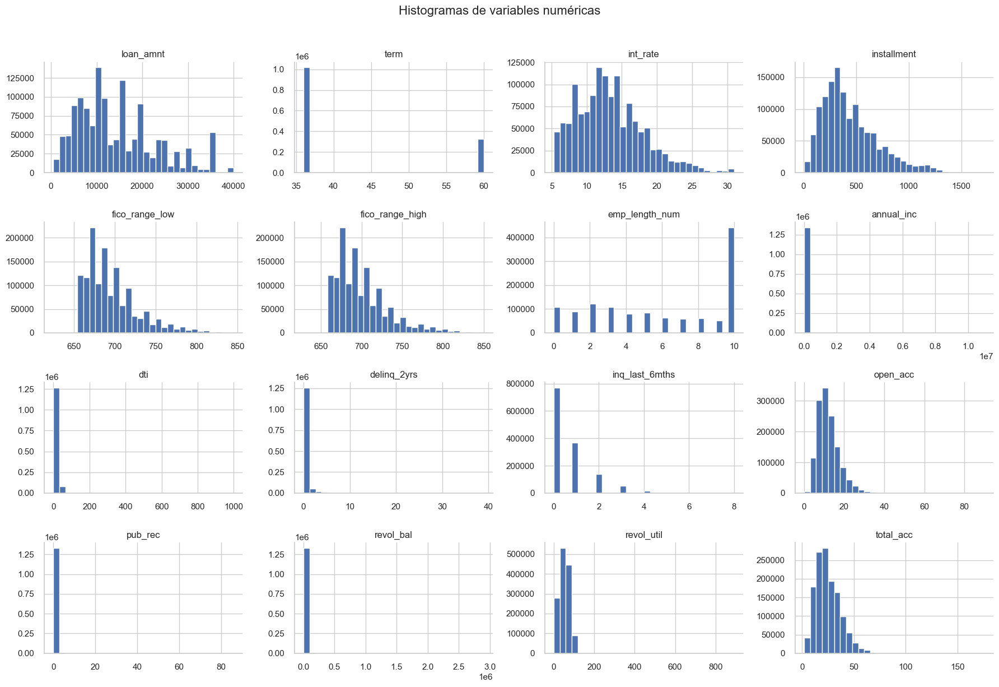
# =======================================
# 2.4 BOXPLOTS POR CLASE (NUMÉRICAS CLAVE)
# =======================================
box_cols = [c for c in ["loan_amnt", "int_rate", "annual_inc", "dti", "fico_range_high"] if c in num_cols]
for c in box_cols:
plt.figure(figsize=(8,6))
sns.boxplot(x="default", y=c, data=df, showfliers=False)
plt.title(f"Boxplot de {c} por clase 'default'")
plt.tight_layout()
plt.show()
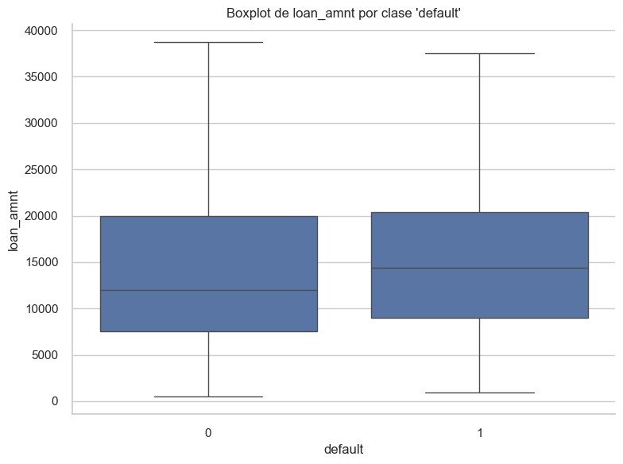
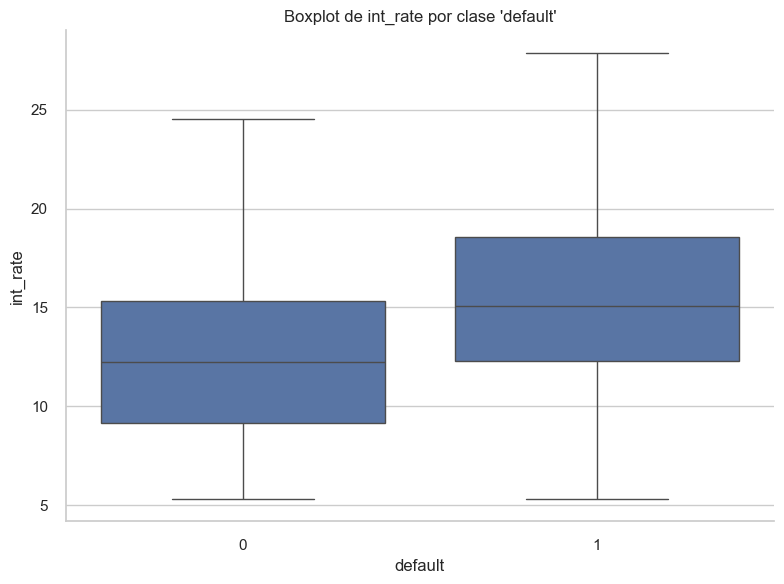
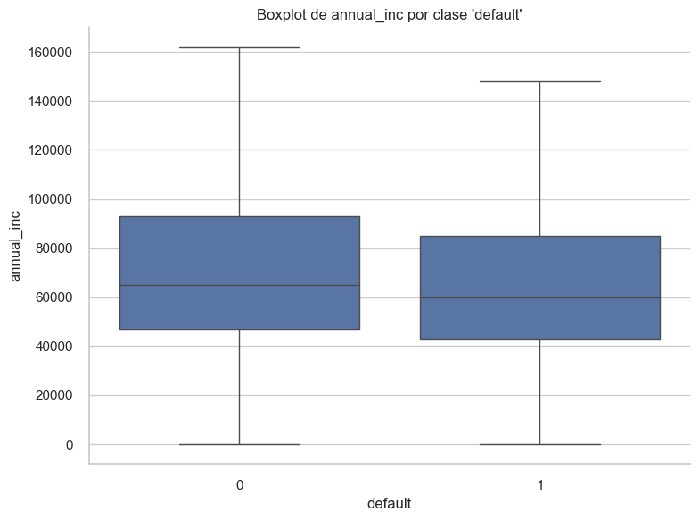
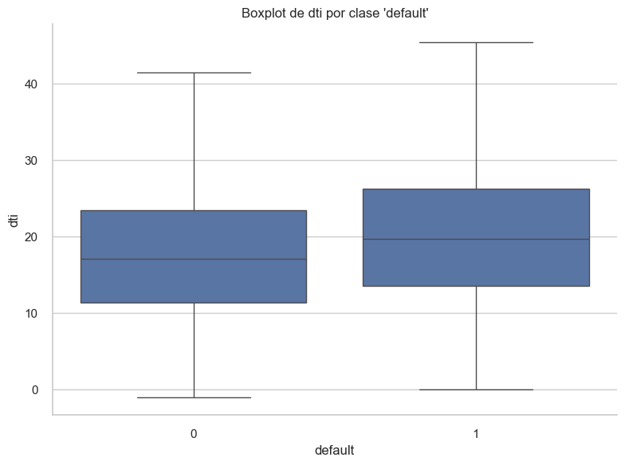
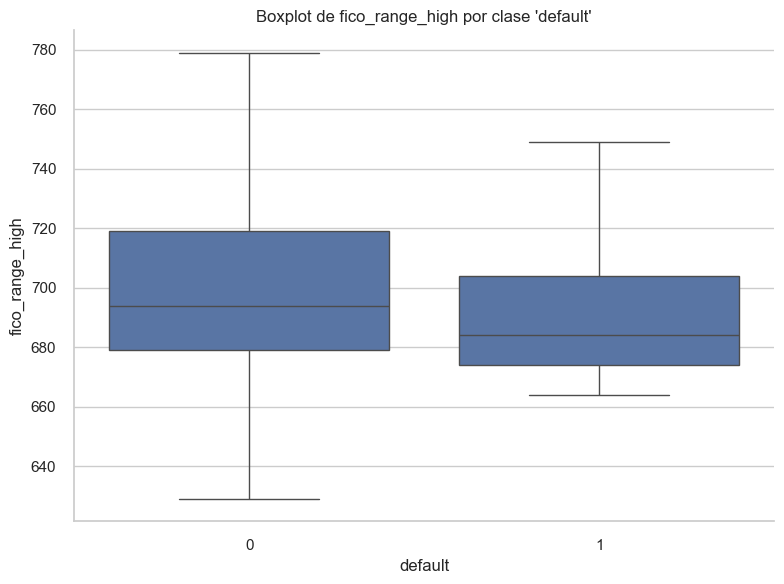
# =======================================
# 2.5 MATRIZ DE CORRELACIÓN (NUMÉRICAS)
# =======================================
# Aseguramos que 'default' sea numérica (0/1)
if "default" in df.columns:
df["default"] = pd.to_numeric(df["default"], errors="coerce")
# Recalcular num_cols SIN excluir 'default' para la matriz completa
num_cols_all = [c for c in df.columns if pd.api.types.is_numeric_dtype(df[c])]
if len(num_cols_all) >= 2:
corr = df[num_cols_all].corr()
plt.figure(figsize=(14, 10))
sns.heatmap(corr, cmap="coolwarm", center=0)
plt.title("Matriz de correlación (todas las numéricas, incluye 'default')")
plt.tight_layout()
plt.show()
# Top correlaciones con default (si está presente)
if "default" in corr.columns:
print("\n--- Correlaciones con 'default' (numéricas) ---")
corr_with_default = df[num_cols_all].corrwith(df["default"]).dropna().sort_values(ascending=False)
display(corr_with_default)
else:
print("Nota: 'default' no está en el set numérico para correlaciones.")
else:
print("No hay suficientes columnas numéricas para calcular una matriz de correlación.")
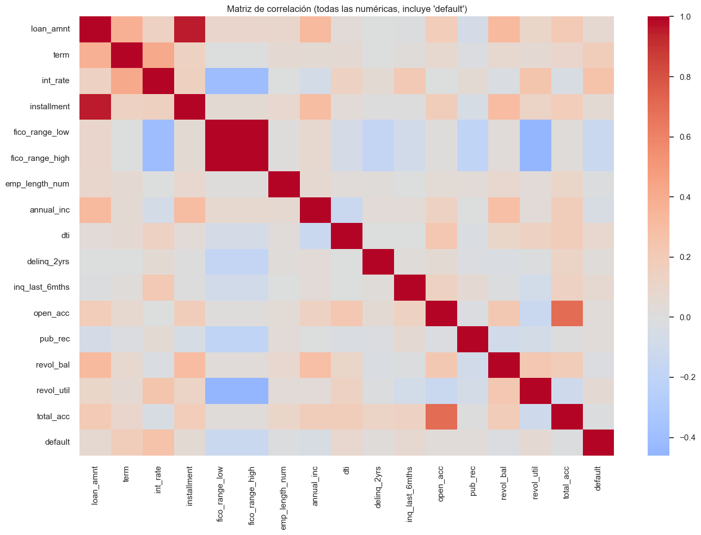
--- Correlaciones con 'default' (numéricas) ---
default 1.000000
int_rate 0.258792
term 0.176096
dti 0.084510
loan_amnt 0.065604
inq_last_6mths 0.065454
revol_util 0.060048
installment 0.051701
open_acc 0.028078
pub_rec 0.026194
delinq_2yrs 0.019381
total_acc -0.011300
emp_length_num -0.014235
revol_bal -0.020010
annual_inc -0.041759
fico_range_high -0.130682
fico_range_low -0.130683
dtype: float64
# =====================================================
# 2.6 TARGET LEAKAGE SCAN (categóricas sospechosas)
# =====================================================
# Heurística: categóricas con muy fuerte asociación con 'default'
from sklearn.metrics import mutual_info_score
leak_scores = {}
for c in cat_cols:
try:
score = mutual_info_score(df[c].astype(str), df["default"])
leak_scores[c] = score
except Exception:
continue
if leak_scores:
leak_sorted = pd.Series(leak_scores).sort_values(ascending=False)
print("\nPosibles variables con alta info respecto a 'default':")
display(leak_sorted.head(15))
else:
print("No se calcularon mutual infos (sin categóricas).")
Posibles variables con alta info respecto a 'default':
sub_grade 0.036814
grade 0.034829
verification_status 0.004370
home_ownership 0.002501
purpose 0.001543
addr_state 0.001294
emp_length 0.000991
application_type 0.000124
initial_list_status 0.000027
dtype: float64
# ===========================================
# 3.0 SPLIT TRAIN/TEST (estratificado)
# ===========================================
from sklearn.model_selection import train_test_split
X = df.drop(columns=["default"])
y = df["default"].astype(int)
X_train, X_test, y_train, y_test = train_test_split(
X, y,
test_size=0.20,
random_state=GLOBAL_SEED,
stratify=y
)
print("Shapes -> Train:", X_train.shape, "| Test:", X_test.shape)
print("Distribución train:", y_train.value_counts(normalize=True).to_dict())
print("Distribución test:", y_test.value_counts(normalize=True).to_dict())
Shapes -> Train: (1076248, 25) | Test: (269062, 25)
Distribución train: {0: 0.8003740773502018, 1: 0.1996259226497982}
Distribución test: {0: 0.8003731481963265, 1: 0.1996268518036735}
# ===================================================
# 3.1 DETECCIÓN DE TIPOS Y PERFIL DE NULOS POR SPLIT
# ===================================================
cat_features = [c for c in X_train.columns if X_train[c].dtype == "object"]
num_features = [c for c in X_train.columns if pd.api.types.is_numeric_dtype(X_train[c])]
print("Numéricas:", len(num_features), "| Categóricas:", len(cat_features))
print("\n--- % NA en train (top 10) ---")
display(X_train[num_features+cat_features].isna().mean().sort_values(ascending=False).head(10))
Numéricas: 16 | Categóricas: 9
--- % NA en train (top 10) ---
emp_length_num 5.837502e-02
emp_length 5.837502e-02
revol_util 6.457619e-04
dti 2.750295e-04
inq_last_6mths 9.291539e-07
loan_amnt 0.000000e+00
initial_list_status 0.000000e+00
addr_state 0.000000e+00
purpose 0.000000e+00
home_ownership 0.000000e+00
dtype: float64
# ===========================================
# 3.2 IMPUTACIÓN TRAIN/TEST
# ===========================================
from sklearn.impute import SimpleImputer
# Numéricas -> mediana
num_imputer = SimpleImputer(strategy="median")
X_train_num = pd.DataFrame(
num_imputer.fit_transform(X_train[num_features]),
columns=num_features, index=X_train.index
)
X_test_num = pd.DataFrame(
num_imputer.transform(X_test[num_features]),
columns=num_features, index=X_test.index
)
# Categóricas -> "missing"
cat_imputer = SimpleImputer(strategy="constant", fill_value="missing")
X_train_cat = pd.DataFrame(
cat_imputer.fit_transform(X_train[cat_features]),
columns=cat_features, index=X_train.index
)
X_test_cat = pd.DataFrame(
cat_imputer.transform(X_test[cat_features]),
columns=cat_features, index=X_test.index
)
# ===================================================
# 3.3 ATÍPICOS: CLIPPING 1–99% (aprendido en train)
# ===================================================
clip_bounds = {}
for c in num_features:
lo, hi = X_train_num[c].quantile([0.01, 0.99]).values
clip_bounds[c] = (lo, hi)
X_train_num[c] = X_train_num[c].clip(lo, hi)
X_test_num[c] = X_test_num[c].clip(lo, hi)
print("Ejemplo bounds (5 vars):", dict(list(clip_bounds.items())[:5]))
Ejemplo bounds (5 vars): {'loan_amnt': (1500.0, 35000.0), 'term': (36.0, 60.0), 'int_rate': (5.32, 26.3), 'installment': (52.96469999999999, 1222.4213000000059), 'fico_range_low': (660.0, 800.0)}
# ===========================================
# 3.4 ESCALADO NUMÉRICAS
# ===========================================
from sklearn.preprocessing import StandardScaler
scaler = StandardScaler()
X_train_num_scaled = pd.DataFrame(
scaler.fit_transform(X_train_num).astype(np.float32),
columns=num_features, index=X_train.index
)
X_test_num_scaled = pd.DataFrame(
scaler.transform(X_test_num).astype(np.float32),
columns=num_features, index=X_test.index
)
# ===========================================
# 3.5 ONE-HOT ENCODING (agrupa rarezas)
# ===========================================
from sklearn.preprocessing import OneHotEncoder
from scipy.sparse import csr_matrix, hstack
if cat_features:
ohe = OneHotEncoder(handle_unknown="ignore", sparse_output=True, min_frequency=0.01)
X_train_cat_ohe = ohe.fit_transform(X_train_cat)
X_test_cat_ohe = ohe.transform(X_test_cat)
ohe_cols = ohe.get_feature_names_out(cat_features)
else:
from scipy.sparse import csr_matrix
X_train_cat_ohe = csr_matrix((len(X_train), 0), dtype=np.float32)
X_test_cat_ohe = csr_matrix((len(X_test), 0), dtype=np.float32)
ohe_cols = []
# ===========================================
# 3.6 ENSAMBLE FINAL TRAIN/TEST
# ===========================================
X_train_num_csr = csr_matrix(X_train_num_scaled.values.astype(np.float32))
X_test_num_csr = csr_matrix(X_test_num_scaled.values.astype(np.float32))
X_train_processed = hstack([X_train_num_csr, X_train_cat_ohe], dtype=np.float32).tocsr()
X_test_processed = hstack([X_test_num_csr, X_test_cat_ohe], dtype=np.float32).tocsr()
feature_names = list(num_features) + list(ohe_cols)
print("Shape final X_train:", X_train_processed.shape)
print("Shape final X_test:", X_test_processed.shape)
Shape final X_train: (1076248, 110)
Shape final X_test: (269062, 110)
# ===========================================
# 3.7 BALANCEO DE CLASES
# ===========================================
from sklearn.utils.class_weight import compute_class_weight
classes = np.unique(y_train)
weights = compute_class_weight(class_weight='balanced', classes=classes, y=y_train)
class_weight_dict = dict(zip(classes, weights))
print("Pesos de clase:", class_weight_dict)
Pesos de clase: {0: 0.6247078886604497, 1: 2.504684729132825}
# ===========================================
# 4.0 CONFIGURACIÓN PARA GRIDSEARCH
# ===========================================
from sklearn.ensemble import RandomForestClassifier
from sklearn.model_selection import GridSearchCV, StratifiedKFold, StratifiedShuffleSplit
import time, gc
# ---------- Parámetros de aceleración ----------
SUBSAMPLE_FOR_GRID = 200_000 # número de filas para GridSearch (estratificado)
MAX_SAMPLES = 0.70 # fracción de filas por árbol (0.5–0.8 acelera; None usa todas)
N_SPLITS_CV = 3 # 3-fold CV
# ----------------------------------------------
# Construir subconjunto estratificado para GridSearch
n_samples = X_train_processed.shape[0]
if n_samples > SUBSAMPLE_FOR_GRID:
sss = StratifiedShuffleSplit(n_splits=1, train_size=SUBSAMPLE_FOR_GRID, random_state=GLOBAL_SEED)
sub_idx, _ = next(sss.split(np.zeros(n_samples), y_train.values))
Xg = X_train_processed[sub_idx]
yg = y_train.values[sub_idx].astype(np.int8)
else:
Xg = X_train_processed
yg = y_train.values.astype(np.int8)
print(f"GridSearch con {Xg.shape[0]:,} filas (de {n_samples:,}). MAX_SAMPLES={MAX_SAMPLES}")
GridSearch con 200,000 filas (de 1,076,248). MAX_SAMPLES=0.7
# ===========================================
# 4.1 MODELO BASE Y GRILLA DE HIPERPARÁMETROS
# ===========================================
rf_base = RandomForestClassifier(
random_state=GLOBAL_SEED,
n_jobs=-1,
class_weight=class_weight_dict,
bootstrap=True,
max_samples=MAX_SAMPLES
)
param_grid = {
"n_estimators": [10, 50, 100],
"max_depth": [5, 10, 15]
}
cv = StratifiedKFold(n_splits=N_SPLITS_CV, shuffle=True, random_state=GLOBAL_SEED)
print("Parámetros a evaluar:", param_grid)
Parámetros a evaluar: {'n_estimators': [10, 50, 100], 'max_depth': [5, 10, 15]}
# ===========================================
# 4.2 GRIDSEARCH EN SUBCONJUNTO
# ===========================================
from sklearn.metrics import roc_auc_score
print("Buscando hiperparámetros (sklearn) en subconjunto...")
sk_grid_start = time.time()
gs = GridSearchCV(
estimator=rf_base,
param_grid=param_grid,
cv=cv,
scoring="roc_auc",
n_jobs=1, # evita sobrecarga de memoria; sube si tu RAM lo permite
verbose=1,
pre_dispatch=1
)
gs.fit(Xg, yg)
sk_grid_end = time.time()
sk_grid_time = sk_grid_end - sk_grid_start
best_params = gs.best_params_
print("Mejores parámetros (subset):", best_params)
print(f"Mejor ROC AUC CV (subset): {gs.best_score_:.4f}")
print(f"Tiempo Grid (subset): {sk_grid_time:.2f} s")
Buscando hiperparámetros (sklearn) en subconjunto...
Fitting 3 folds for each of 9 candidates, totalling 27 fits
Mejores parámetros (subset): {'max_depth': 10, 'n_estimators': 100}
Mejor ROC AUC CV (subset): 0.7091
Tiempo Grid (subset): 238.76 s
# ===========================================
# 4.3 ENTRENAMIENTO FINAL EN TODO EL TRAIN
# ===========================================
best_rf = RandomForestClassifier(
random_state=GLOBAL_SEED,
n_jobs=-1,
class_weight=class_weight_dict,
bootstrap=True,
max_samples=MAX_SAMPLES,
**best_params
)
print("\nEntrenando modelo final en TODO el train...")
sk_fit_start = time.time()
best_rf.fit(X_train_processed, y_train.values.astype(np.int8))
sk_fit_end = time.time()
sk_fit_time = sk_fit_end - sk_fit_start
print(f"Tiempo entrenamiento final (full train): {sk_fit_time:.2f} s")
Entrenando modelo final en TODO el train...
Tiempo entrenamiento final (full train): 266.40 s
# ===========================================
# 4.4 PREDICCIÓN Y MÉTRICAS EN TEST
# ===========================================
from sklearn.metrics import (
accuracy_score, precision_score, recall_score, f1_score,
roc_auc_score, confusion_matrix, roc_curve, auc
)
pred_start = time.time()
y_pred = best_rf.predict(X_test_processed)
y_pred_proba = best_rf.predict_proba(X_test_processed)[:, 1]
pred_end = time.time()
sk_pred_time = pred_end - pred_start
sk_metrics = {
"Accuracy": accuracy_score(y_test, y_pred),
"Precision": precision_score(y_test, y_pred),
"Recall": recall_score(y_test, y_pred),
"F1-Score": f1_score(y_test, y_pred),
"ROC AUC": roc_auc_score(y_test, y_pred_proba),
"Train Time (s)": sk_grid_time + sk_fit_time,
"Pred Time (s)": sk_pred_time
}
print("\nMétricas (sklearn, final):")
for k, v in sk_metrics.items():
print(f"{k}: {v:.4f}" if isinstance(v, float) else f"{k}: {v}")
Métricas (sklearn, final):
Accuracy: 0.6197
Precision: 0.3035
Recall: 0.6987
F1-Score: 0.4232
ROC AUC: 0.7085
Train Time (s): 505.1597
Pred Time (s): 1.5896
# ===========================================
# 4.5 MATRIZ DE CONFUSIÓN Y CURVA ROC
# ===========================================
import seaborn as sns
import matplotlib.pyplot as plt
cm = confusion_matrix(y_test, y_pred)
plt.figure(figsize=(7,6))
sns.heatmap(cm, annot=True, fmt="d", cmap="Blues")
plt.title("Matriz de Confusión — RandomForest (sklearn, final)")
plt.ylabel("Real"); plt.xlabel("Predicho")
plt.tight_layout(); plt.show()
fpr, tpr, _ = roc_curve(y_test, y_pred_proba)
roc_auc_skl = auc(fpr, tpr)
plt.figure(figsize=(7,6))
plt.plot(fpr, tpr, lw=2, label=f"AUC = {roc_auc_skl:.3f}")
plt.plot([0,1],[0,1],"--")
plt.xlabel("False Positive Rate"); plt.ylabel("True Positive Rate")
plt.title("Curva ROC — RandomForest (sklearn, final)")
plt.legend(loc="lower right")
plt.tight_layout(); plt.show()
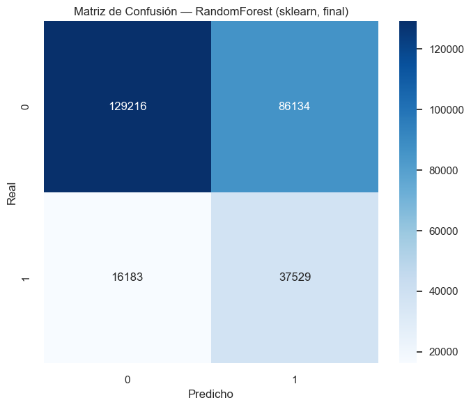
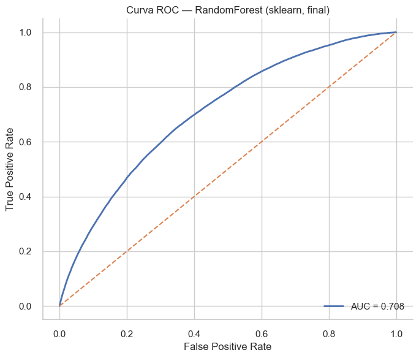
# ===========================================
# 4.6 IMPORTANCIAS DE VARIABLES
# ===========================================
fi = pd.DataFrame({
"feature": feature_names,
"importance": best_rf.feature_importances_
}).sort_values("importance", ascending=False)
plt.figure(figsize=(10,10))
sns.barplot(data=fi.head(20), x="importance", y="feature")
plt.title("Top-20 Importancias — RandomForest (sklearn, final)")
plt.tight_layout(); plt.show()
fi_path = os.path.join(ARTIFACTS_DIR, "importancias_sklearn_rf.csv")
fi.to_csv(fi_path, index=False)
print("Guardado:", fi_path)
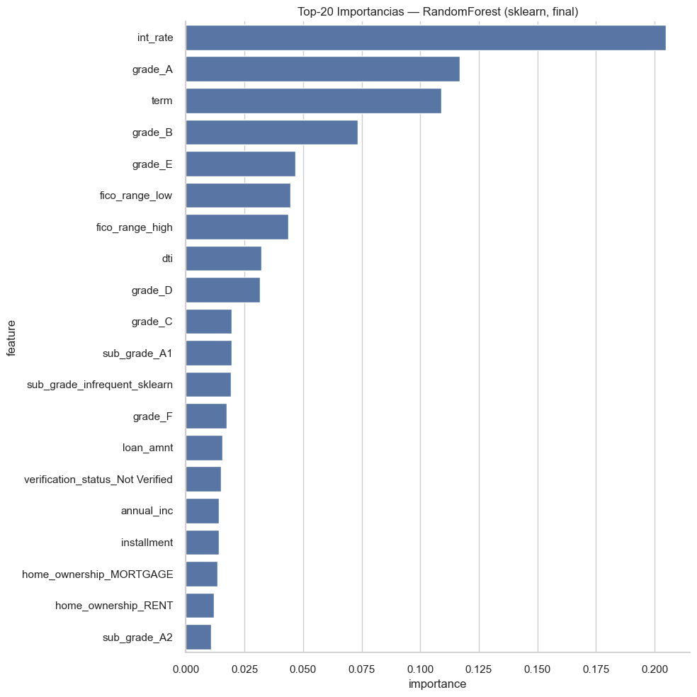
Guardado: resultados\importancias_sklearn_rf.csv
JDK_HOME = r"C:\Program Files\Java\jdk-21"
import os, shutil, subprocess, sys
# 1) Sobrescribe JAVA_HOME y pon el bin del JDK al frente del PATH del proceso
os.environ["JAVA_HOME"] = JDK_HOME
os.environ["PATH"] = JDK_HOME + r"\bin;" + os.environ["PATH"]
print("Python:", sys.version)
print("sys.executable:", sys.executable)
print("JAVA_HOME (uso actual del proceso):", os.environ.get("JAVA_HOME"))
print("java encontrado en PATH:", shutil.which("java"))
# 2) Verifica que el java activo es el del JDK 21
subprocess.run(["where", "java"], check=False)
subprocess.run(["java", "-version"], check=False)
Python: 3.9.23 (main, Jun 5 2025, 13:25:08) [MSC v.1929 64 bit (AMD64)]
sys.executable: c:\Users\potot\miniconda3\envs\ml_venv\python.exe
JAVA_HOME (uso actual del proceso): C:\Program Files\Java\jdk-21
java encontrado en PATH: C:\Program Files\Java\jdk-21\bin\java.EXE
CompletedProcess(args=['java', '-version'], returncode=0)
from pyspark.sql import SparkSession
CORES = None # None -> local[*]
DRIVER_MEM_GB = 12 # con 16 GB, 8–10 es buena cifra
SHUFFLE_PARTS = 12
GLOBAL_SEED = 42
master = f"local[{CORES}]" if isinstance(CORES, int) and CORES > 0 else "local[*]"
spark = (
SparkSession.builder
.master(master)
.appName("LendingClub_RF_Spark")
# estabilidad local/Windows/puertos
.config("spark.driver.bindAddress", "127.0.0.1")
.config("spark.driver.host", "127.0.0.1")
.config("spark.port.maxRetries", "64")
.config("spark.driver.extraJavaOptions", "-Djava.net.preferIPv4Stack=true")
.config("spark.executor.extraJavaOptions", "-Djava.net.preferIPv4Stack=true")
.config("spark.ui.enabled", "false")
# memoria/ejecución
.config("spark.driver.memory", f"{DRIVER_MEM_GB}g")
.config("spark.sql.shuffle.partitions", str(SHUFFLE_PARTS))
.config("spark.default.parallelism", str(SHUFFLE_PARTS))
.getOrCreate()
)
spark.sparkContext.setLogLevel("WARN")
import pyspark
print("Spark version:", spark.version, "| PySpark:", pyspark.__version__)
print("JAVA_HOME que ve Spark:", os.environ.get("JAVA_HOME"))
Spark version: 4.0.1 | PySpark: 4.0.1
JAVA_HOME que ve Spark: C:\Program Files\Java\jdk-21
import pandas as pd
from pyspark.sql.functions import col
from pyspark.sql.types import DoubleType, StringType
# Unimos X + y y creamos spark_df
df_pd = pd.concat([X, y.rename("default")], axis=1)
# Detección de tipos desde pandas
pd_num_cols = [c for c in X.columns if pd.api.types.is_numeric_dtype(X[c])]
pd_cat_cols = [c for c in X.columns if not pd.api.types.is_numeric_dtype(X[c])]
# Limpieza mínima defensiva
drop_cols = []
for c in pd_num_cols:
if X[c].notna().sum() == 0: # todo NA
drop_cols.append(c)
for c in pd_cat_cols:
s = X[c].dropna()
if s.nunique() < 2: # cardinalidad <2 rompe StringIndexer
drop_cols.append(c)
if drop_cols:
df_pd = df_pd.drop(columns=drop_cols, errors="ignore")
pd_num_cols = [c for c in pd_num_cols if c not in drop_cols]
pd_cat_cols = [c for c in pd_cat_cols if c not in drop_cols]
spark_df = spark.createDataFrame(df_pd)
# Casts explícitos
for c in pd_num_cols:
spark_df = spark_df.withColumn(c, col(c).cast(DoubleType()))
for c in pd_cat_cols:
spark_df = spark_df.withColumn(c, col(c).cast(StringType()))
spark_df = spark_df.withColumn("default", col("default").cast(DoubleType()))
spark_df.printSchema()
print("Filas totales:", spark_df.count())
root
|-- loan_amnt: double (nullable = true)
|-- term: double (nullable = true)
|-- int_rate: double (nullable = true)
|-- installment: double (nullable = true)
|-- grade: string (nullable = true)
|-- sub_grade: string (nullable = true)
|-- fico_range_low: double (nullable = true)
|-- fico_range_high: double (nullable = true)
|-- emp_length: string (nullable = true)
|-- emp_length_num: double (nullable = true)
|-- annual_inc: double (nullable = true)
|-- verification_status: string (nullable = true)
|-- home_ownership: string (nullable = true)
|-- purpose: string (nullable = true)
|-- addr_state: string (nullable = true)
|-- dti: double (nullable = true)
|-- delinq_2yrs: double (nullable = true)
|-- inq_last_6mths: double (nullable = true)
|-- open_acc: double (nullable = true)
|-- pub_rec: double (nullable = true)
|-- revol_bal: double (nullable = true)
|-- revol_util: double (nullable = true)
|-- total_acc: double (nullable = true)
|-- initial_list_status: string (nullable = true)
|-- application_type: string (nullable = true)
|-- default: double (nullable = true)
Filas totales: 1345310
from pyspark.ml import Pipeline as SparkPipeline
from pyspark.ml.feature import StringIndexer, VectorAssembler, Imputer
stages = []
# 1) Imputación numérica
numeric_final = []
if pd_num_cols:
imputer = Imputer(
inputCols=pd_num_cols,
outputCols=[c + "_imp" for c in pd_num_cols],
strategy="mean"
)
stages.append(imputer)
numeric_final = [c + "_imp" for c in pd_num_cols]
# 2) Indexado de categóricas (no OHE: RF no lo necesita)
indexed_cats = []
for c in pd_cat_cols:
stages.append(StringIndexer(inputCol=c, outputCol=c + "_idx", handleInvalid="keep"))
indexed_cats.append(c + "_idx")
# 3) Ensamble de features directo (sin VectorIndexer)
assembler_inputs = numeric_final + indexed_cats
assembler = VectorAssembler(inputCols=assembler_inputs, outputCol="features", handleInvalid="keep")
stages.append(assembler)
print("Stages del pipeline:", [type(s).__name__ for s in stages])
Stages del pipeline: ['Imputer', 'StringIndexer', 'StringIndexer', 'StringIndexer', 'StringIndexer', 'StringIndexer', 'StringIndexer', 'StringIndexer', 'StringIndexer', 'StringIndexer', 'VectorAssembler']
from pyspark.sql.functions import when, col
from pyspark import StorageLevel
# Split 80/20 (igual seed que sklearn para comparabilidad)
train_sp, test_sp = spark_df.randomSplit([0.8, 0.2], seed=GLOBAL_SEED)
# Pesos de clase (para desbalance)
cls_counts = {row["default"]: row["count"] for row in train_sp.groupBy("default").count().collect()}
pos = cls_counts.get(1.0, cls_counts.get(1, 1))
neg = cls_counts.get(0.0, cls_counts.get(0, 1))
pos_weight = float(neg) / float(pos) if pos else 1.0
train_sp = train_sp.withColumn("class_weight", when(col("default") == 1.0, pos_weight).otherwise(1.0))
test_sp = test_sp.withColumn("class_weight", when(col("default") == 1.0, pos_weight).otherwise(1.0))
train_sp = train_sp.persist(StorageLevel.DISK_ONLY)
test_sp = test_sp.persist(StorageLevel.DISK_ONLY)
_ = train_sp.limit(1).collect(); _ = test_sp.limit(1).collect()
print("Recuento train por clase:", cls_counts, "| pos_weight:", round(pos_weight, 3))
print("train/test:", train_sp.count(), test_sp.count())
# Subconjunto para CV
GRID_SAMPLE_FRAC = 0.25
GRID_SAMPLE_FRAC = max(0.05, min(0.9, GRID_SAMPLE_FRAC))
train_cv = train_sp.sample(False, GRID_SAMPLE_FRAC, seed=GLOBAL_SEED).persist(StorageLevel.DISK_ONLY)
if train_cv.limit(1).count() == 0:
train_cv = train_sp.sample(False, 0.5, seed=7).persist(StorageLevel.DISK_ONLY)
print("Filas train para CV:", train_cv.count(), f"(frac={GRID_SAMPLE_FRAC})")
Recuento train por clase: {0.0: 861731, 1.0: 214961} | pos_weight: 4.009
train/test: 1076692 268618
Filas train para CV: 269405 (frac=0.25)
import time
from pyspark.ml.classification import RandomForestClassifier as SparkRF
from pyspark.ml.tuning import ParamGridBuilder, CrossValidator
from pyspark.ml.evaluation import BinaryClassificationEvaluator
rf = SparkRF(
featuresCol="features",
labelCol="default",
weightCol="class_weight",
seed=GLOBAL_SEED,
maxBins=512, # alto para evitar problemas de cardinalidad discreta
featureSubsetStrategy="sqrt",
subsamplingRate=0.7
)
paramGrid = (
ParamGridBuilder()
.addGrid(rf.numTrees, [10, 50, 100])
.addGrid(rf.maxDepth, [5, 10, 15])
.build()
)
evaluator = BinaryClassificationEvaluator(
labelCol="default", rawPredictionCol="rawPrediction", metricName="areaUnderROC"
)
pipeline = SparkPipeline(stages=stages + [rf])
CV_FOLDS = 3
import os
CV_PARALLELISM = max(2, (os.cpu_count() or 4) // 2)
print("CV en subset...")
sp_cv_start = time.time()
cv = CrossValidator(
estimator=pipeline,
estimatorParamMaps=paramGrid,
evaluator=evaluator,
numFolds=CV_FOLDS,
parallelism=CV_PARALLELISM,
seed=GLOBAL_SEED
)
cv_model = cv.fit(train_cv)
sp_cv_time = time.time() - sp_cv_start
print(f"Tiempo CV subset: {sp_cv_time:.2f}s")
best_pipeline = cv_model.bestModel
best_rf = best_pipeline.stages[-1]
best_params = {"numTrees": best_rf.getOrDefault("numTrees"), "maxDepth": best_rf.getOrDefault("maxDepth")}
print("Mejores hiperparámetros (CV subset):", best_params)
CV en subset...
Tiempo CV subset: 2146.78s
Mejores hiperparámetros (CV subset): {'numTrees': 100, 'maxDepth': 10}
rf_best = SparkRF(
featuresCol="features",
labelCol="default",
weightCol="class_weight",
seed=GLOBAL_SEED,
maxBins=512,
featureSubsetStrategy="sqrt",
subsamplingRate=0.7,
numTrees=best_params["numTrees"],
maxDepth=best_params["maxDepth"]
)
full_pipeline = SparkPipeline(stages=stages + [rf_best])
print("Refit en TODO el train con mejores hiperparámetros...")
sp_fit_start = time.time()
best_model = full_pipeline.fit(train_sp)
sp_fit_time = time.time() - sp_fit_start
sp_train_time = sp_cv_time + sp_fit_time
print(f"Tiempo total entrenamiento (CV subset + refit full): {sp_train_time:.2f}s")
Refit en TODO el train con mejores hiperparámetros...
Tiempo total entrenamiento (CV subset + refit full): 2472.37s
from pyspark.ml.evaluation import MulticlassClassificationEvaluator
sp_pred_start = time.time()
preds_best = best_model.transform(test_sp).select("default", "prediction", "rawPrediction", "probability")
sp_pred_time = time.time() - sp_pred_start
# AUC (Spark)
pyspark_auc = evaluator.evaluate(preds_best)
# Métricas multiclase
mce = MulticlassClassificationEvaluator(labelCol="default", predictionCol="prediction")
acc_eval = mce.setMetricName("accuracy").evaluate(preds_best)
f1_eval = mce.setMetricName("f1").evaluate(preds_best)
prec_eval = mce.setMetricName("weightedPrecision").evaluate(preds_best)
rec_eval = mce.setMetricName("weightedRecall").evaluate(preds_best)
# Matriz de confusión compacta
cm_rows = preds_best.groupBy("default", "prediction").count().collect()
cm_dict = {(float(r["default"]), float(r["prediction"])): r["count"] for r in cm_rows}
tn = cm_dict.get((0.0, 0.0), 0); fp = cm_dict.get((0.0, 1.0), 0)
fn = cm_dict.get((1.0, 0.0), 0); tp = cm_dict.get((1.0, 1.0), 0)
pyspark_metrics = {
"Accuracy": acc_eval,
"Precision": prec_eval,
"Recall": rec_eval,
"F1-Score": f1_eval,
"ROC AUC": pyspark_auc,
"Train Time (s)": sp_train_time,
"Pred Time (s)": sp_pred_time,
"ConfusionMatrix": [[tn, fp], [fn, tp]],
"BestParams": best_params
}
print("\nMÉTRICAS (PySpark):")
for k, v in pyspark_metrics.items():
if k in ("ConfusionMatrix", "BestParams"): continue
print(f" {k}: {v:.4f}" if isinstance(v, float) else f" {k}: {v}")
print(" BestParams:", pyspark_metrics["BestParams"])
print(" ConfusionMatrix [[TN,FP],[FN,TP]]:", pyspark_metrics["ConfusionMatrix"])
MÉTRICAS (PySpark):
Accuracy: 0.6438
Precision: 0.7728
Recall: 0.6438
F1-Score: 0.6789
ROC AUC: 0.7127
Train Time (s): 2472.3672
Pred Time (s): 0.3879
BestParams: {'numTrees': 100, 'maxDepth': 10}
ConfusionMatrix [[TN,FP],[FN,TP]]: [[136837, 78183], [17496, 36102]]
# ===== Curva ROC en PySpark sin UDFs (fix counts) =====
import numpy as np
import pandas as pd
import matplotlib.pyplot as plt
from sklearn.metrics import roc_curve, auc
from pyspark.sql.functions import col
from pyspark.ml.functions import vector_to_array
# 1) Extraer prob1 (=P(clase=1)) con APIs nativas (sin UDFs)
preds_scores = (
preds_best
.select(
col("default").cast("int").alias("label"),
vector_to_array("probability").getItem(1).alias("prob1")
)
.na.drop(subset=["label", "prob1"])
)
# 2) Muestreo estratificado seguro (construir dict label->count correctamente)
ROC_SAMPLE = 100_000
counts_rows = preds_scores.groupBy("label").count().collect()
counts = {int(r["label"]): int(r["count"]) for r in counts_rows} # <- clave: label, valor: count
n_total = sum(counts.values())
frac_global = min(1.0, ROC_SAMPLE / max(1, n_total))
# Fracción por clase (misma fracción para ambas; suficiente para ROC)
fractions = {lbl: min(1.0, frac_global) for lbl in counts.keys()}
preds_sample = preds_scores.sampleBy("label", fractions=fractions, seed=GLOBAL_SEED)
# [Alternativa si sampleBy diera guerra en tu entorno]:
# from pyspark.sql.functions import rand
# preds_sample = preds_scores.orderBy(rand(GLOBAL_SEED)).limit(ROC_SAMPLE)
# 3) Traer la muestra al driver
pdf = preds_sample.toPandas()
y_true = pdf["label"].to_numpy(dtype=int)
y_score = pdf["prob1"].to_numpy(dtype=float)
# 4) ROC
fpr, tpr, _ = roc_curve(y_true, y_score)
roc_auc = auc(fpr, tpr)
plt.figure(figsize=(7,6))
plt.plot(fpr, tpr, lw=2, label=f"PySpark RF (AUC={roc_auc:.3f})")
plt.plot([0,1], [0,1], "--")
plt.xlabel("False Positive Rate")
plt.ylabel("True Positive Rate")
plt.title("Curva ROC — PySpark RandomForest")
plt.legend(loc="lower right")
plt.tight_layout(); plt.show()
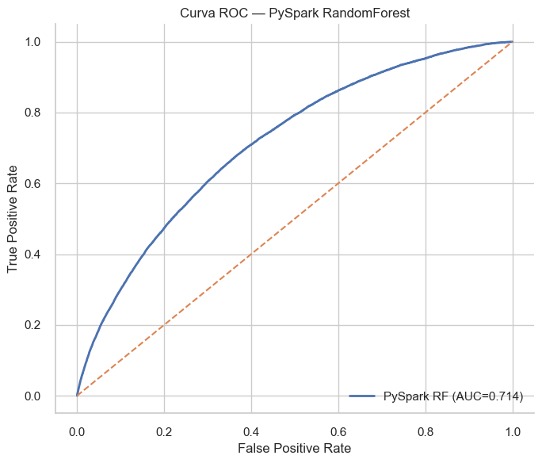
def _safe_stop_spark(_spark):
try: _spark.stop()
except Exception: pass
try:
train_cv.unpersist(blocking=False)
train_sp.unpersist(blocking=False)
test_sp.unpersist(blocking=False)
except Exception:
pass
_safe_stop_spark(spark)
print("Spark detenido.")
Spark detenido.
# ===== Rescue: asegurar best_rf_skl (sklearn) disponible =====
import os
from sklearn.ensemble import RandomForestClassifier as SKRF
# Carpeta donde guardaste artefactos
RESULTS_DIR = RESULTS_DIR if 'RESULTS_DIR' in globals() else "resultados"
best_rf_skl = None
# 1) Si ya existe el alias y es sklearn, úsalo
if 'best_rf_skl' in globals() and isinstance(best_rf_skl, SKRF):
pass
# 2) Si best_rf sigue siendo sklearn, úsalo
elif 'best_rf' in globals() and isinstance(best_rf, SKRF):
best_rf_skl = best_rf
# 3) Si tenemos el GridSearch de sklearn, usa el best_estimator_
elif 'gs' in globals() and hasattr(gs, 'best_estimator_') and isinstance(gs.best_estimator_, SKRF):
best_rf_skl = gs.best_estimator_
# 4) Cargar desde disco el modelo sklearn guardado
else:
import joblib
model_path = os.path.join(RESULTS_DIR, "modelo_sklearn_rf.pkl")
if not os.path.exists(model_path):
raise FileNotFoundError(
f"No encuentro {model_path}. "
"Si no lo has guardado aún, vuelve a la sección de sklearn y guarda el modelo con joblib.dump."
)
best_rf_skl = joblib.load(model_path)
# Sanity check
assert isinstance(best_rf_skl, SKRF), "No se pudo recuperar un RandomForestClassifier de scikit-learn como best_rf_skl."
print("✅ Modelo sklearn listo: best_rf_skl")
✅ Modelo sklearn listo: best_rf_skl
# ===========================================
# 6. INTERPRETABILIDAD con LIME (sklearn)
# ===========================================
import os, numpy as np
RESULTS_DIR = RESULTS_DIR if 'RESULTS_DIR' in globals() else "resultados"
os.makedirs(RESULTS_DIR, exist_ok=True)
# 1) Verificar que tenemos el modelo sklearn guardado como alias estable
from sklearn.ensemble import RandomForestClassifier as SKRF
if 'best_rf_skl' not in globals() or not isinstance(best_rf_skl, SKRF):
raise RuntimeError(
"No encuentro el modelo sklearn como 'best_rf_skl'. "
"Asegúrate de crear el alias al final de la sección sklearn:\n"
" best_rf_skl = best_rf"
)
# 2) Verificar LIME
try:
import lime, lime.lime_tabular
print("lime versión:", getattr(lime, "__version__", "unknown"))
except Exception as e:
raise RuntimeError("LIME no está instalado correctamente. Instala con: pip install lime") from e
# 3) Asegurar predicciones ya calculadas (del modelo sklearn)
if 'y_pred' not in globals() or 'y_pred_proba' not in globals():
y_pred = best_rf_skl.predict(X_test_processed)
y_pred_proba = best_rf_skl.predict_proba(X_test_processed)[:, 1]
# 4) Elegir instancias a explicar
mis_idx = np.where(y_test.values != y_pred)[0]
if mis_idx.size == 0:
print("No hay mal clasificados; se tomarán 2 instancias aleatorias del test.")
rng = np.random.default_rng(42)
mis_idx = rng.choice(np.arange(len(y_test)), size=min(2, len(y_test)), replace=False)
else:
mis_idx = mis_idx[:2]
# 5) Construir el explainer con el TRAIN preprocesado
from scipy.sparse import csr_matrix
X_train_for_lime = X_train_processed.toarray() if hasattr(X_train_processed, "toarray") else X_train_processed
explainer = lime.lime_tabular.LimeTabularExplainer(
X_train_for_lime,
feature_names=feature_names,
class_names=["No Default", "Default"],
discretize_continuous=True,
mode="classification",
verbose=False,
random_state=42
)
# 6) predict_proba compatible con LIME (usa explícitamente el modelo sklearn)
def _predict_proba_fn(xs):
xs = np.asarray(xs)
if hasattr(X_train_processed, "toarray"):
return best_rf_skl.predict_proba(csr_matrix(xs))
else:
return best_rf_skl.predict_proba(xs)
# 7) Generar y guardar explicaciones
for i, idx in enumerate(mis_idx, start=1):
x0 = X_test_processed[idx]
x0_arr = x0.toarray()[0] if hasattr(x0, "toarray") else x0
exp = explainer.explain_instance(
x0_arr,
_predict_proba_fn,
num_features=10
)
html_path = os.path.join(RESULTS_DIR, f"lime_explicacion_{i}.html")
exp.save_to_file(html_path)
print(f"[OK] LIME guardado: {html_path}")
lime versión: unknown
[OK] LIME guardado: resultados\lime_explicacion_1.html
[OK] LIME guardado: resultados\lime_explicacion_2.html
# ===========================================
# 7. COMPARACIÓN FINAL + GRÁFICOS + EXPORTABLES
# ===========================================
import os
import numpy as np
import pandas as pd
import matplotlib.pyplot as plt
RESULTS_DIR = RESULTS_DIR if 'RESULTS_DIR' in globals() else "resultados"
os.makedirs(RESULTS_DIR, exist_ok=True)
# --- sanity: necesitamos sk_metrics (sklearn) y pyspark_metrics (spark)
if 'sk_metrics' not in globals():
raise RuntimeError("Falta 'sk_metrics'. Vuelve a ejecutar la sección de scikit-learn.")
if 'pyspark_metrics' not in globals() or pyspark_metrics is None:
print("[Aviso] 'pyspark_metrics' no está disponible. La comparación mostrará 'N/A' para Spark.")
# Tabla comparativa
rows = [
["Accuracy", sk_metrics.get("Accuracy"), pyspark_metrics.get("Accuracy") if pyspark_metrics else np.nan],
["Precision", sk_metrics.get("Precision"), pyspark_metrics.get("Precision") if pyspark_metrics else np.nan],
["Recall", sk_metrics.get("Recall"), pyspark_metrics.get("Recall") if pyspark_metrics else np.nan],
["F1-Score", sk_metrics.get("F1-Score"), pyspark_metrics.get("F1-Score") if pyspark_metrics else np.nan],
["ROC AUC", sk_metrics.get("ROC AUC"), pyspark_metrics.get("ROC AUC") if pyspark_metrics else np.nan],
["Train Time (s)", sk_metrics.get("Train Time (s)"), pyspark_metrics.get("Train Time (s)") if pyspark_metrics else np.nan],
["Pred Time (s)", sk_metrics.get("Pred Time (s)"), pyspark_metrics.get("Pred Time (s)") if pyspark_metrics else np.nan],
]
comp_df = pd.DataFrame(rows, columns=["Métrica", "scikit-learn", "PySpark"])
display(comp_df)
# Guardar CSV
comp_csv = os.path.join(RESULTS_DIR, "comparacion_metricas.csv")
comp_df.to_csv(comp_csv, index=False)
print(f"[OK] Guardado comparativo en: {comp_csv}")
# --- Gráfico de barras con métricas de performance (sin tiempos)
metrics_bar = ["Accuracy", "Precision", "Recall", "F1-Score", "ROC AUC"]
skl_vals = [sk_metrics[m] for m in metrics_bar]
sp_vals = [pyspark_metrics[m] if pyspark_metrics else np.nan for m in metrics_bar]
x = np.arange(len(metrics_bar))
w = 0.35
plt.figure(figsize=(10,6))
plt.bar(x - w/2, skl_vals, width=w, label="scikit-learn")
plt.bar(x + w/2, sp_vals, width=w, label="PySpark")
plt.xticks(x, metrics_bar)
plt.ylabel("Score")
plt.ylim(0, 1.0)
plt.title("Comparación de métricas — sklearn vs PySpark")
plt.legend()
plt.tight_layout()
plt.show()
# --- Gráfico de tiempos
time_bar = ["Train Time (s)", "Pred Time (s)"]
skl_t = [sk_metrics[time_bar[0]], sk_metrics[time_bar[1]]]
sp_t = [pyspark_metrics[time_bar[0]] if pyspark_metrics else np.nan,
pyspark_metrics[time_bar[1]] if pyspark_metrics else np.nan]
x = np.arange(len(time_bar))
plt.figure(figsize=(8,5))
plt.bar(x - w/2, skl_t, width=w, label="scikit-learn")
plt.bar(x + w/2, sp_t, width=w, label="PySpark")
plt.xticks(x, time_bar)
plt.ylabel("Segundos")
plt.title("Comparación de tiempos — sklearn vs PySpark")
plt.legend()
plt.tight_layout()
plt.show()
# --- Guardar artefactos clave si aún no están
# (importancias, modelo sklearn, preprocess ya se guardaron en secciones previas)
print("[INFO] Verifica carpeta 'resultados/' para: comparacion_metricas.csv, importancias_sklearn_rf.csv, lime_explicacion_*.html, modelo_sklearn_rf.pkl, scaler.pkl, ohe.pkl (si aplica), imputer(s), clip_bounds.pkl.")
| Métrica | scikit-learn | PySpark | |
|---|---|---|---|
| 0 | Accuracy | 0.619727 | 0.643810 |
| 1 | Precision | 0.303478 | 0.772754 |
| 2 | Recall | 0.698708 | 0.643810 |
| 3 | F1-Score | 0.423160 | 0.678927 |
| 4 | ROC AUC | 0.708474 | 0.712687 |
| 5 | Train Time (s) | 505.159685 | 2472.367182 |
| 6 | Pred Time (s) | 1.589581 | 0.387869 |
[OK] Guardado comparativo en: resultados\comparacion_metricas.csv
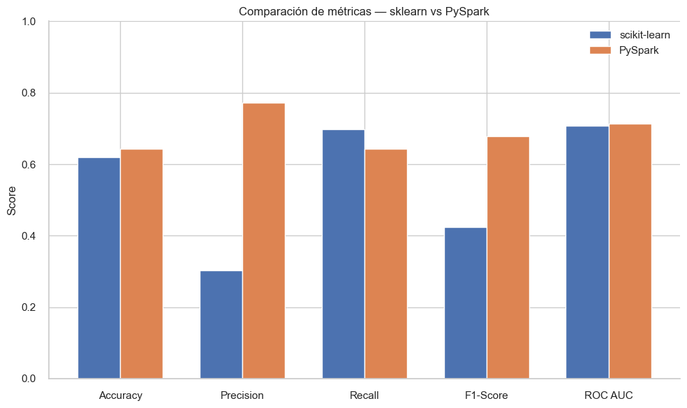
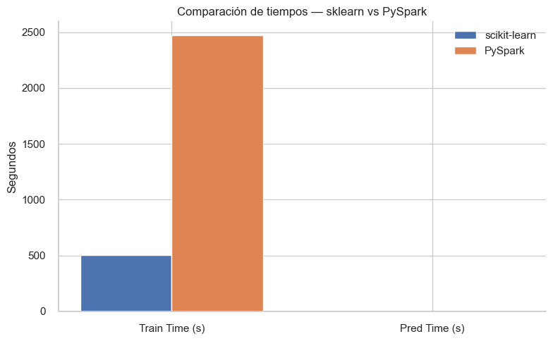
[INFO] Verifica carpeta 'resultados/' para: comparacion_metricas.csv, importancias_sklearn_rf.csv, lime_explicacion_*.html, modelo_sklearn_rf.pkl, scaler.pkl, ohe.pkl (si aplica), imputer(s), clip_bounds.pkl.
# ===========================================
# 8. REPRODUCIBILIDAD: resumen ambiente y seeds
# ===========================================
import sys, platform, os, json
import numpy as np, pandas as pd
import sklearn
try:
import lime
lime_version = getattr(lime, "__version__", "unknown")
except Exception:
lime_version = "unknown"
info = {
"python_version": sys.version,
"platform": platform.platform(),
"numpy": np.__version__,
"pandas": pd.__version__,
"sklearn": sklearn.__version__,
"lime": lime_version,
"GLOBAL_SEED": GLOBAL_SEED if 'GLOBAL_SEED' in globals() else None,
"SPARK_VERSION": spark.version if 'spark' in globals() else None,
"JAVA_HOME": os.environ.get("JAVA_HOME", None)
}
print(json.dumps(info, indent=2))
# (Opcional) Guardar este JSON
env_path = os.path.join(RESULTS_DIR, "environment_summary.json")
with open(env_path, "w", encoding="utf-8") as f:
json.dump(info, f, indent=2)
print(f"[OK] environment_summary.json guardado en: {env_path}")
{
"python_version": "3.9.23 (main, Jun 5 2025, 13:25:08) [MSC v.1929 64 bit (AMD64)]",
"platform": "Windows-10-10.0.26100-SP0",
"numpy": "1.23.5",
"pandas": "2.3.1",
"sklearn": "1.6.1",
"lime": "unknown",
"GLOBAL_SEED": 42,
"SPARK_VERSION": "4.0.1",
"JAVA_HOME": "C:\\Program Files\\Java\\jdk-21"
}
[OK] environment_summary.json guardado en: resultados\environment_summary.json